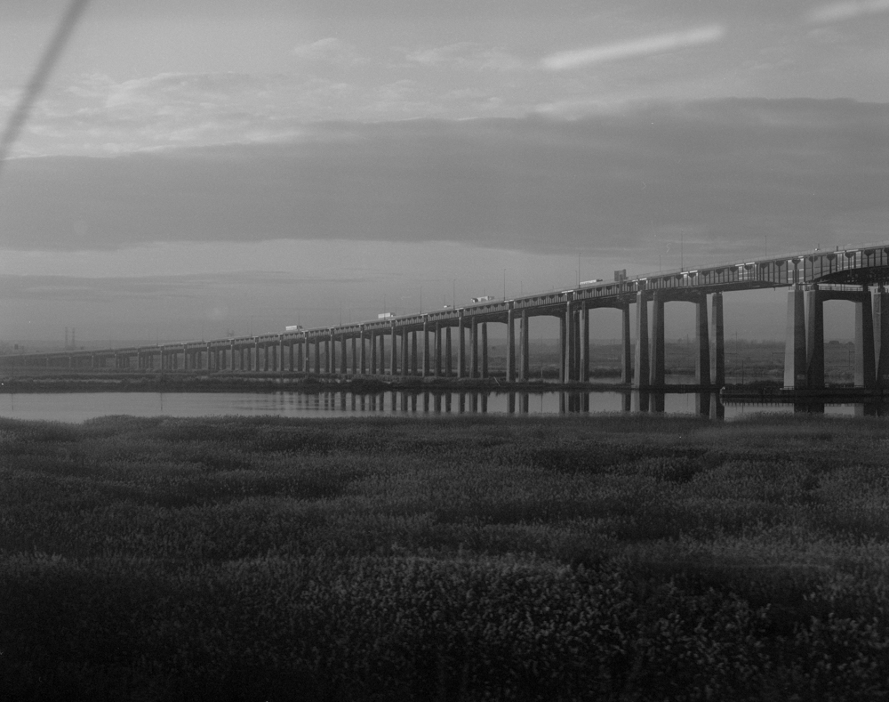
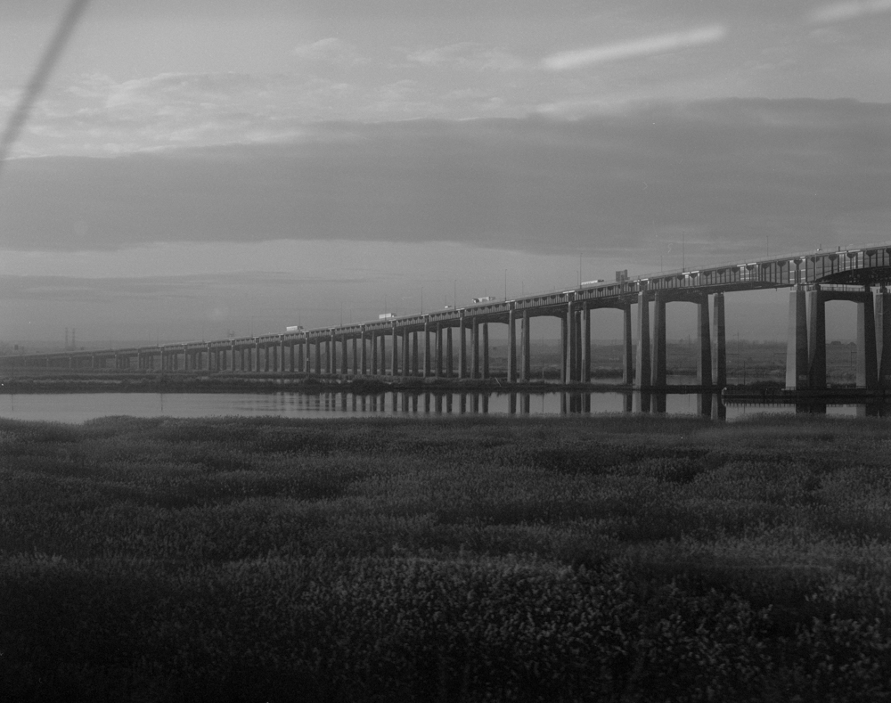

One Minute Photographs of the great American Landscape
By Melvyn Ivy
19th October 2021, 3PM
/Introduction
When I fucked up ordering our cap to the airport in time something that
could’ve been a stressful disaster turned around on us. We made it from 2nd
Str to 2Av and up the f train to Penn Station, handing out our last dollars and
crumbs of weed to who could now make better use of em, hastily kicking the
suitcase over bumps and sidewalks, jumping into our now best option on rails
to Newark New York Airport. When we settled down the view started to clear
and change; Jersey parking lots and industry buildings disappeared and
made room for a sparse landscape, golden hour soaked fields and a single
road spiralling up and down above the horizon line. The view was right out of
the american photobook by the greats and from narratives burned into my
memory from so many classic movies. This must’ve been the fastest I ever
loaded and ran through a roll of film, a fleeting minute, it couldn’t have been
many more until the mirror of my Pentax slapped for the 10th time through
the rather quiet wagon and the sun had sunken on our left and disappeared
from the landscape as apprupptly as it came into sight. Out of breath after
having barely breathed properly while staying motionless pressed again the
window and camera pressed against me.
Considering time, this is my shortest, little story.
Melvyn
 
